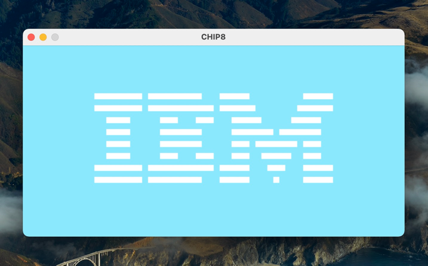
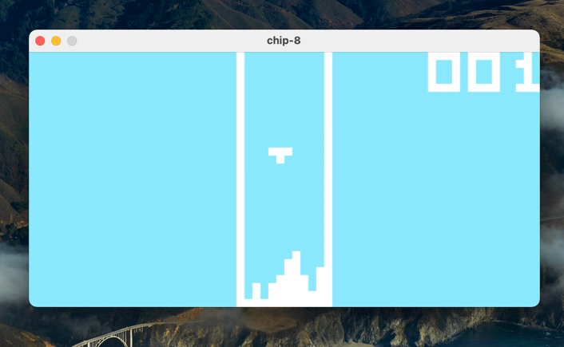

初识 Chip8¶
缘起¶
自从玩了Nintendo Switch 的上《塞尔达传说旷野之息》 。1 第一次体会到了以前的快乐不是真正的快乐。回想童年也有过玩游戏的快乐。现在想玩童年的游戏，需要安装那些游戏机(平台)的模拟器。尝试了几个开源版本之后，或多或少有点使用问题。于是萌发了自己写一个模拟器的想法。
查阅了一些资料，NES(红白机)，GameBoy 等都比较复杂。写一个模拟器最好先从简单入手。CHIP8 就是一个非常好的项目。SPEC文档十分简单。2 配合开源的绘图组件，实现一个CHIP8模拟器十分方便。
Chip8¶
1977年，RCA 的工程师 Joseph Weisbecker 3 为了让电子游戏编写更加便捷而开发了CHIP8。 Chip8 最初运行在 COSMAC VIP 机器上。4
现在习惯称之为 Chip8 模拟器(Emulator) 或者 Chip8 虚拟机(Virtual Machine)。Chip8 实际上是一种解释型编程语言i(interpreted programming language)。 在COSMAC VIP 提供 CDP1802 处理器使用的机器语言。Chip8 可以让开发者编写类似机器代码的十六进制指令, 以取代 1802 的机器指令。
我们即将实现的 Chip8 是一个软件，可以运行在常用的操作系统，Windows，MacOS 或者 Linux。所以称之为虚拟机也无可厚非。
现在计算机结构为冯诺依曼体系 :
运算器&控制器 (CPU)
存储器 (Memory Disk)
IO (Display Keyboard)
Chip8 虚拟机无非也就是实现一套 指令集，寄存器，内存和IO。

上图是来自 Columbia University 文档里的图示。也是实现Chip8主要体系结构参考图。
从图中可以看到，Chip8 是运行在OS(Linux)之上的一个虚拟机。由下面几个部分组成：
CPU：
通用寄存器：CPU 有 16 个 8-bit 通用寄存器(Register)，编号 V0 ~ VF，通常 VF 用于标识位 flag 寄存器。
指令寄存器：一个 16-bit 的 PC(Pointer Counter) 指令寄存器，Chip8 的内存是 4k，因此 PC 只要 2-byte 即可寻址。
索引寄存器：一个 16-bit 地址索引寄存器I(Index)。
栈顶寄存器：64-Byte 的栈(stack)和 16-bit 栈顶指针寄存器SP(Stack Pointer)。
两个定时器：8-bit 定时器， delay timer 和 sound timer，它们都是按照 60Hz的频率递减。其中 sound timer 要是大于0，就发出声音。
GPU:
视频缓存：一个 64 * 32 大小的视频缓存。
Memory：
4-KB 大小的内存，其中 0x0000-0x01ff 为 Chip8 系统保留，多用于存储字体(font)。
0x0200 ~ 0x0e9f 程序可以自由使用。即 0x0200 为程序开始地址，所以初始化 PC 的值为 0x0200。
0x0ea0 ~ 0x0eff 保留给栈使用。实现的时候也可以直接使用单独的数据结构，不使用模拟器的内存来分配。
0x0f00 ~ 0x0fff: 保留给屏幕使用。Chip8 的分辨率为 64 * 32，每一个像素一个bit。存储这些像素需要 ((64 * 32) / 8) byte，正好是 256byte 5
Keyboard：
16个按键的键盘，映射关系如下
Keyboard Chip-8
+---+---+---+---+ +---+---+---+---+
| 1 | 2 | 3 | 4 | | 1 | 2 | 3 | C |
+---+---+---+---+ +---+---+---+---+
| Q | W | E | R | | 4 | 5 | 6 | D |
+---+---+---+---+ => +---+---+---+---+
| A | S | D | F | | 7 | 8 | 9 | E |
+---+---+---+---+ +---+---+---+---+
| Z | X | C | V | | A | 0 | B | F |
+---+---+---+---+ +---+---+---+---+
Chip8 是运行在 OS 之上的虚拟机，借助 OS 进行 IO 事件和屏幕显示。 上面对各组件进行了简介，后面进行实现编码的时候，我们再详细介绍他们。
项目¶
接下来我们将从零开始，step by step 实现一个Chip8 Emulator 。编写 Chip8 的过程，可以重温 CPU 的基本工作原理。了解处理器解析指令执行的过程。
项目使用Python3.9 进行构建，Python 的生态比较完善，相关的库也容易找到，并且在开发调试过程中比较方便。
使用Pygame 用来绘制屏幕和处理键盘事件。Pygame 的底层依赖SDL2 。 Golang 和 Rust 也有对应的库方便调用 SDL2。项目仓库也提供了Golang 和[Rust] 版本。
下面是项目效果图：使用 chip8 打印 IBM logo 和 著名的 TETRIS 游戏 6
 本人使用 MacOS 进行开发。理论上，Python 和 Pygame 都支持跨平台，其他平台运行也可以，但并未测试。
- 1
旷野之息是NS机器的护航大作，坊间常开玩笑说买 旷野之息 送switch游戏机.
- 2
chip8比较有名的spec的主要来自 Cowgods’s Chip-8 和 Columbia University 在线PDF文档Embedded Systems CSEE 4840
- 3
Joseph A. Weisbecker (September 4, 1932 – November 15, 1990) 是早期的微处理器和微计算机研究者，也是一位天才的玩具和游戏作家和设计师
- 4
早期的微型计算机，主要用于视频游戏。本质上，它是带有辅助CDP1861 / CDP1864视频显示芯片的COSMAC ELF
- 5
Chip8 最初设计的栈(stack)和视频缓存(framebuffer)是在 4K 的内存中，实际上我们实现的时候，可以单独使用额外的数据结构。
- 6
Chip8 的年代，显示器多数是黑白。Chip8 的背景是黑色，前景的像素是白色。现在我们可以根据自己的喜好，自己设定背景和前景色彩。